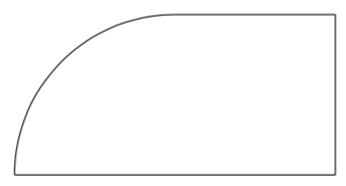

CODE
\usepackage{tikz}
\usepackage{tikz}
\begin{tikzpicture}
*The code goes here*
\end{tikzpicture}
\draw (0,0) -- (3,3);
\draw (0,0) -- (1,1) -- (2,0) -- (3,1) -- (4,0) -- (5,1) -- (6,0);
\draw (0,0) -- (3,0) -- (3,3) -- cycle;
\draw (0,0) rectangle (5,3);
\draw (0,0) parabola (4,3);
\draw (0,0) arc (30:120:4cm);
\draw (0,0) ellipse (3cm and 0.5cm);
\draw (0,0) circle (3cm);
\draw (0,-0.5) -- (0,0.5);
\draw (-3,0) -- (3,0);
With the information on this page now we ca draw many many figures, now try to reproduce the following figure:  For the solution move te mouse over the black box on the right.
\draw (0,0) -- (4,0);
\draw (0,0) arc (180:90:2cm);
\draw (2,2) -- (4,2);
\draw (4,0) -- (4,2);